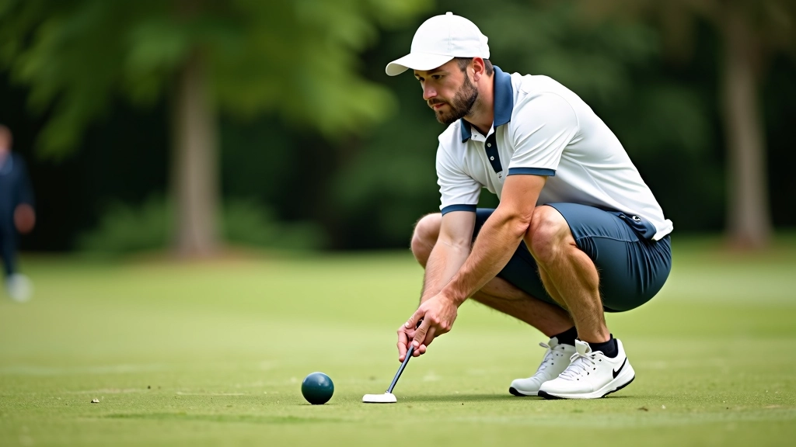
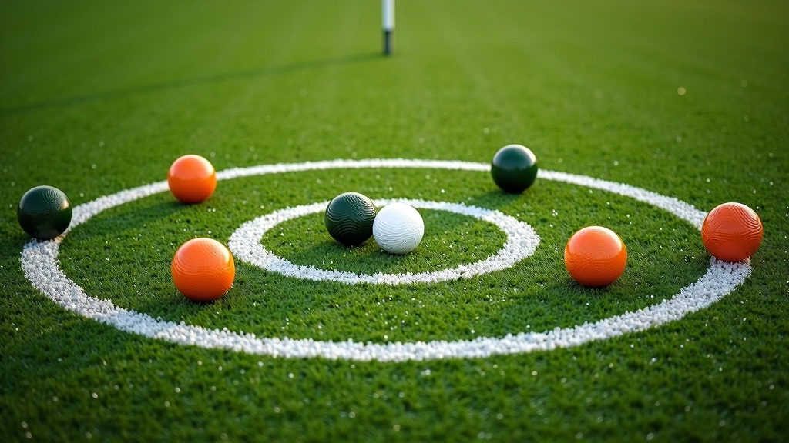
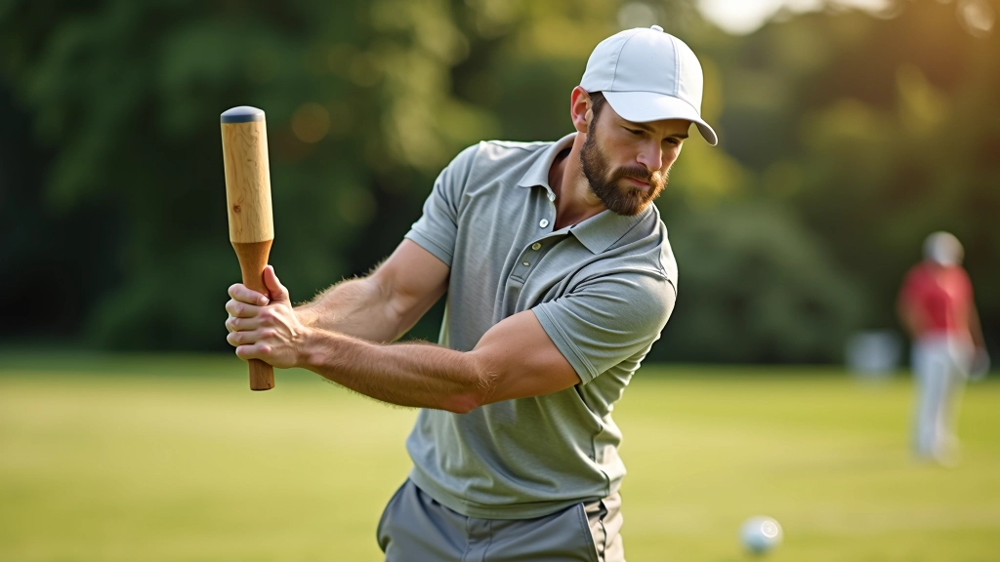
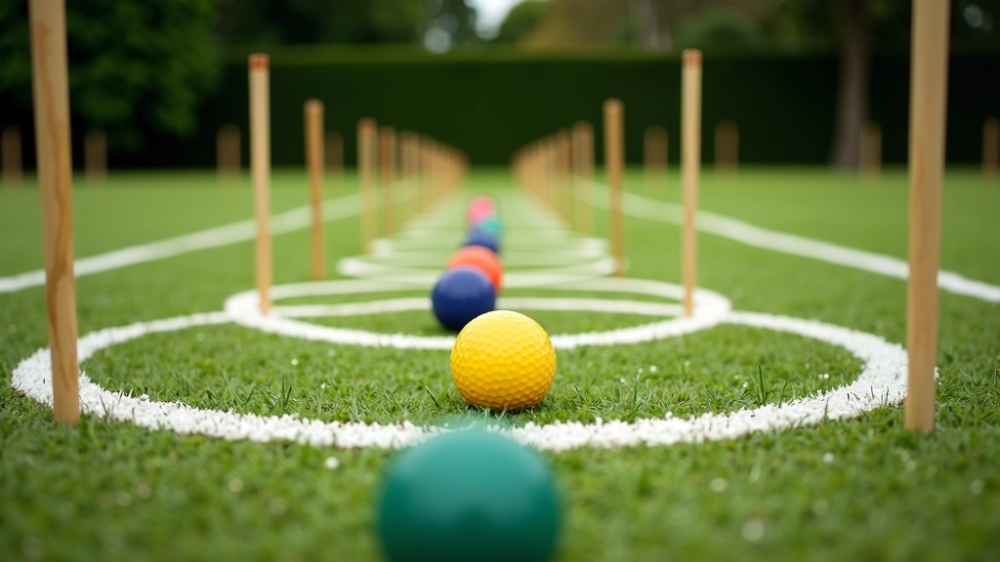
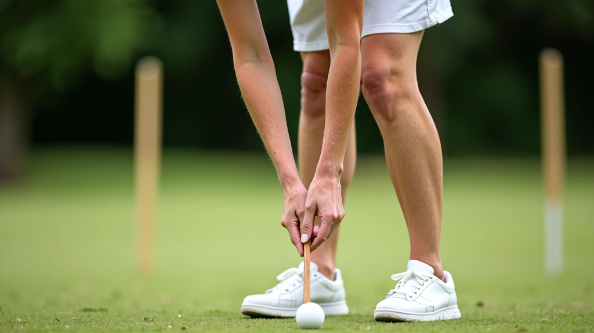
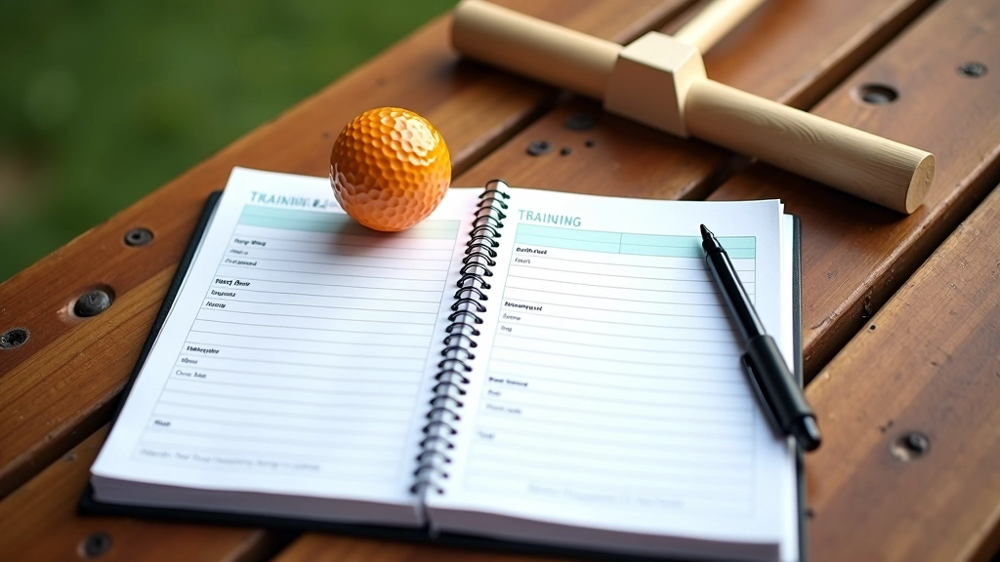

إتقان الضربة الأساسية: من البداية إلى الاحترافية
تعلم كيفية تنفيذ الضربة الأساسية بشكل صحيح. نغطي موضع القدمين، قبضة المضرب، والحركة الصحيحة لكل ضربة.
أفضل اللاعبين يتدربون بانتظام. إليك خمس تمارين عملية يمكنك فعلها في أي ملعب لتحسين مستواك


فريق التحرير والمراجعة
كتبها فريق مركز النخبة للكروكيه، متخصصون في تقديم إرشادات عملية وسهلة التطبيق لتحسين مهارات الكرة المركزية.
التدريب المنتظم هو المفتاح الحقيقي لتحسن مهاراتك. لا يتعلق الأمر بقضاء ساعات طويلة على الملعب — بل بالتدريب الذكي والمركّز. نحن نركز على تمارين محددة تطور دقتك وقوتك معاً.
معظم اللاعبين يشعرون بتحسن ملموس بعد ثلاثة أسابيع من التدريب المنتظم. أنت لا تحتاج إلى معدات غالية الثمن — فقط مضرب جيد، بعض الكرات، وملعب كروكيه عادي. الباقي يعتمد على الالتزام والتكرار.

ابدأ بوضع خمس كرات على الملعب على مسافات مختلفة من الهدف. الأول على بعد متر واحد، الثاني على متر ونصف، والثالث على ثلاثة أمتار، والرابع على خمسة أمتار، والخامس على سبعة أمتار.
ضرب كل كرة نحو الهدف عشر مرات. لا تتوقع أن تصيب الهدف في كل محاولة — الهدف هو تحسين دقتك تدريجياً. سجل عدد المرات التي تصيب فيها الهدف من كل مسافة. ستلاحظ تحسناً بعد أسبوعين.


القوة ليست عن ضرب الكرة بعنف. يتعلق الأمر بتوليد قوة ثابتة ومتحكم بها. ابدأ برفع مضرب الكروكيه لأعلى وأسفل ببطء — 15 مرة. ثم كرر هذا بسرعة أسرع قليلاً.
الخطوة التالية أهم: ضرب كرة ثقيلة الوزن (إذا كان متاحاً) أو كرة عادية بقوة متزايدة تدريجياً. لا تفرط في الجهد في اليوم الأول. تدريبك يجب أن يكون منتظماً وليس متهوراً.
نصيحة مهمة: لا تركز على القوة الخام فقط. التحكم والدقة أهم بكثير من القوة العمياء.
إخلاء المسؤولية
هذه التمارين مقدمة لأغراض تعليمية وإرشادية. قبل البدء بأي برنامج تدريب جديد، تأكد من أنك في حالة صحية جيدة. إذا كان لديك أي إصابات أو آلام، استشر متخصصاً قبل البدء. كل شخص مختلف، والنتائج تختلف حسب الالتزام والممارسة المنتظمة.
هذا التمرين يعلمك كيفية توجيه الكرة بدقة. ضع ثلاث علامات على الملعب — واحدة على بعد 3 أمتار، واحدة على 5 أمتار، وواحدة على 8 أمتار. من نقطة البداية، اضرب الكرة نحو كل علامة بالترتيب.
الهدف هو أن توقف الكرة بالقرب من العلامة قدر الإمكان. كرر هذا 10 مرات. ستلاحظ أن التحكم يتحسن بسرعة لأنك تركز على دقة محددة.


الوضعية الصحيحة تؤثر بشكل كبير على دقتك. قدماك يجب أن تكون على مسافة تقريباً بعرض الأكتاف. وزنك موزع بالتساوي على القدمين. ركبتاك مثنية قليلاً. ذراعك تتحرك بسلاسة من الكتف.
لا تحني ظهرك كثيراً. الكثير من اللاعبين الجدد يرتكبون هذا الخطأ. قف منتصباً، اثن ركبتيك قليلاً، وابدأ الحركة من الكتف. هذه الوضعية تعطيك تحكماً أفضل وقوة أكثر اتساقاً.
في نهاية كل أسبوع، قيّم تقدمك. ضع خمس كرات على الملعب من مسافات مختلفة (مثل التمرين الأول) وسجل عدد الأهداف من كل مسافة. قارن النتائج مع الأسبوع السابق.
يجب أن ترى تحسناً تدريجياً. إذا لم ترَ تحسناً بعد شهر، قد تحتاج إلى التركيز على الوضعية أو تقنية الحركة أكثر. لا تيأس — حتى أفضل اللاعبين بدأوا من الصفر.
3
أسابيع للملاحظة الأولى
20
دقيقة لكل جلسة تدريب
4
مرات في الأسبوع

هذه التمارين الخمسة ستضعك على الطريق الصحيح. الالتزام هو المفتاح. لا تتوقع نتائج فورية — لكن بعد شهر أو شهرين من التدريب المنتظم، ستشعر بفرق حقيقي في دقتك وقوتك.
تذكر أن تستمتع باللعبة. التدريب يجب أن يكون ممتعاً وليس مملاً. ادع صديقاً لينضم إليك على الملعب — التدريب مع شخص آخر أكثر متعة وتحفيزاً.
استكشف مقالات أخرى عن تكتيكات الكرة المركزية والحركات المتقدمة.
استمر في التعلم مع هذه الأدلة الأخرى
تعلم كيفية تنفيذ الضربة الأساسية بشكل صحيح. نغطي موضع القدمين، قبضة المضرب، والحركة الصحيحة لكل ضربة.

اكتشف كيفية استخدام الكرة المركزية للسيطرة على اللعب. نشرح الحركات الاستراتيجية والتموضع الصحيح.

بعد إتقان الأساسيات، حان الوقت للحركات الصعبة. تعلم الضربات المنحنية والحسابات المعقدة.